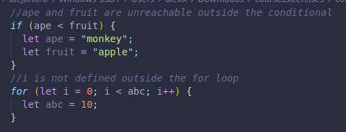
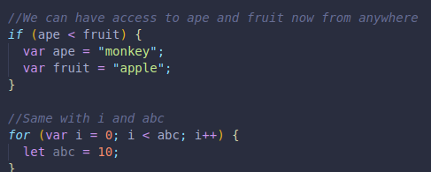

A block is what's inside the curlt braces of things like conditionals statements, loops, etc. Scope in a block works differently than with a function.
We can not access any variable declared in a block, unless we are calling it from inside the block. if we try, we will get an error saying that the variable is not defined.
We can still access universal variables, which are outside blocks.
If we declare our variables with var instead of let or const, we actually have scope even outside the blocks where they were declared!
let and const block scopes them from anywhere, even after they have been used we can see their values!
